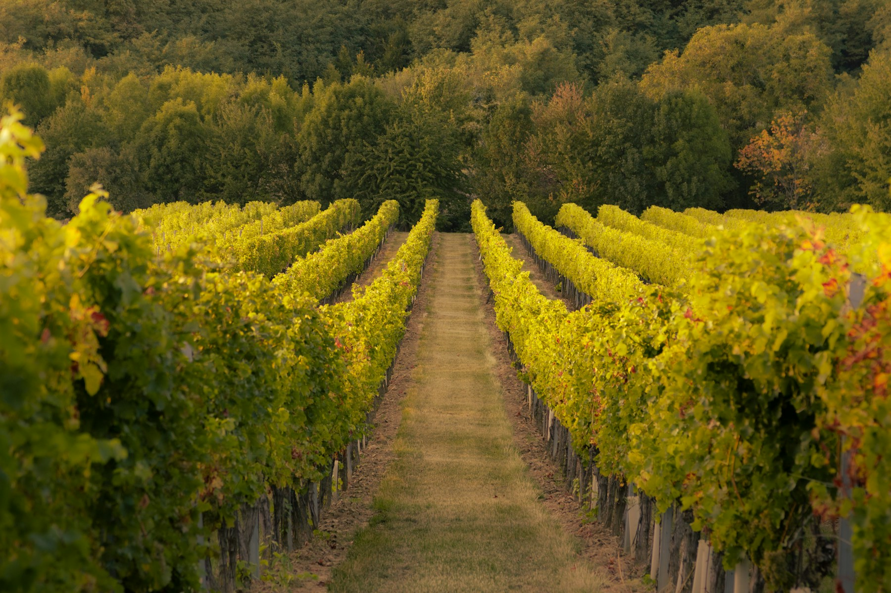
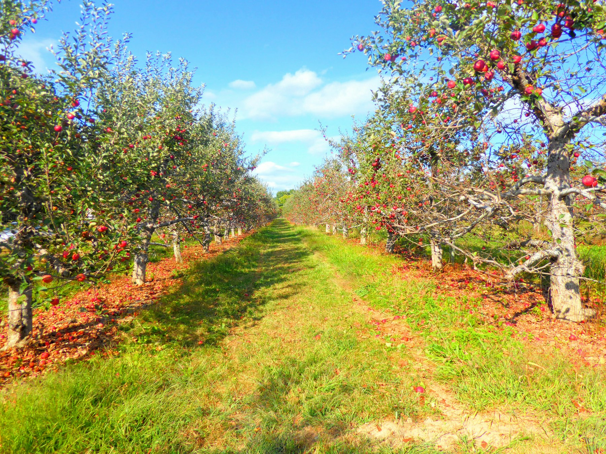
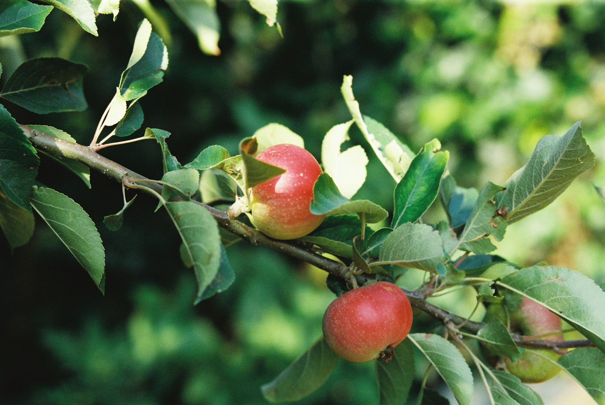

Pflege für Reben, Obst und Garten.
Gartenpflege in Meilen. Ihr Kontakt: Jürg Schneider.

Was Top Garten pflegt
- RebenPflege der Reben.
- ObstPflege von Obst.
- GartenPflege des Gartens.
Arbeiten im Einzelnen, von Top Garten zu ergänzen


Erreichbar von Montag bis Freitag
| Montag bis Freitag | 08:00 bis 12:00 und 13:00 bis 18:00 |
|---|---|
| Samstag und Sonntag | geschlossen |
| Adresse | Feldhofstrasse 78, 8706 Meilen |
| Einsatzgebiet | von Top Garten zu ergänzen |